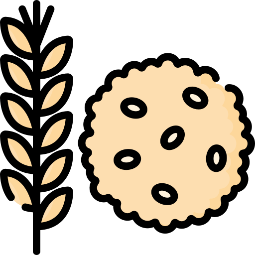

Bienvenidos a la sección de
alimentación en nuestra página web de mascotas. Aquí encontrarás toda la
información que necesitas para asegurarte de que tu peludo amigo esté recibiendo una alimentación
adecuada y equilibrada.
Sabemos que la nutrición es uno de los aspectos más importantes para la salud y bienestar de tu mascota,
por eso hemos recopilado toda la información relevante sobre los diferentes tipos de alimentos, sus
beneficios y riesgos, y cómo elegir el mejor para tu mascota.
Dietas Equilibradas
Principios de una dieta canina apropiada
Una alimentación adecuada ayuda a mantener la salud de tu
mascota y la prepara para enfrentar las
actividades del día a día. Entre otras cosas, los perros necesitan:
- Suficiente hidratación
Se recomienda la ingesta de 60 mililitros de agua por cada kilogramo de su peso corporal. Si tu
perrito pesa unos dieciséis kilogramos, debería consumir algo más de un litro de agua por día.
Esta
relación aumenta en el caso de cachorros, hembras en período de lactancia, perros muy activos o
climas cálidos.
- Dieta equilibrada
La alimentación ideal debe contener una combinación de proteínas, grasas, carbohidratos,
vitaminas y minerales; todo esto en las proporciones adecuadas para cubrir las necesidades
nutricionales del perro según su raza, tamaño y edad.
- Cantidades medidas
Medir y pesar la comida es una forma conveniente de cuidar la salud de tu amigo peludo, ya que te
ayudará a evitar la obesidad y otras complicaciones.
- Hasta los cuatro meses de edad, los cachorros tienen un metabolismo más veloz y un gasto
energético superior. En esta etapa, se recomienda que consuman cerca del 10 % de su peso en
alimento.
- Después de los cuatro meses empieza a decaer el metabolismo del animal y disminuye su gasto
calórico. Por ende, la ingesta debería reducirse hasta el 8 %.
- A los doce meses, el perro ya habrá alcanzado la adultez. Aquí, la ingesta de alimentos
debería
ubicarse en un 3 % de su peso en kilogramos.
El nivel de actividad también influye, en especial en el caso de los perros adultos. Las
mascotas activas pueden consumir entre el 3 % y el 4 % de su peso en alimento. Los perritos
sedentarios, una menor cantidad (cerca del 2 %).
¿Cómo saber que tu mascota necesita un cambio de dieta?
Hay señales claras en la apariencia y comportamiento del can que podrían indicarte que es momento de
cambiar
el tipo de alimentos que consume. ¿A qué deberías prestar atención?
- Obesidad o sobrepeso.
- Un pelaje apagado y sin brillo.
- Inactividad o un bajo nivel de energía.
- Problemas en el sistema digestivo, como flatulencias o diarrea.
Alimento Natural
 La dieta natural se basa en la preparación de
alimentos crudos. Hablamos de una mezcla de carne o pescado, huesos, vísceras, frutas, huevos,
frutos secos, cereales y verduras sin cocinar.
La dieta natural se basa en la preparación de
alimentos crudos. Hablamos de una mezcla de carne o pescado, huesos, vísceras, frutas, huevos,
frutos secos, cereales y verduras sin cocinar.
Este tipo de alimentación se conoce como la Dieta BARF (Biologically Appropriate Raw Food). En sí, busca
evitar la degradación por calor de las vitaminas, antioxidantes y enzimas contenidos naturalmente en los
alimentos.
Si decides optar por los alimentos naturales, deberías:
- Elegir carnes frescas.
- Cuidar la higiene para evitar la contaminación.
- Consultar con el veterinario para que te ayude a calcular las proporciones adecuadas.
13 Alimentos natuales para que puedas complementar la dieta de tu perro
- La mantequilla de maní.
Buena fuente de proteínas y aportará salud a su corazón. Es súper útil a la hora de rellenar un
juguete como el Kong. No sólo se mantendrá ocupado unos cuantos minutos sino que disfrutará
lamiendo tan rico sabor.
Lo ideal es procesarla cruda y sin sal.
- Pollo cocido.(NO HUESOS)
 Puedes agregar trozitos desmenuzados de pollo grillé a su comida habitual. Esto le dará sabor y una
linda sorpresa a tu perro, además de cuidar su masa muscular.
Puedes agregar trozitos desmenuzados de pollo grillé a su comida habitual. Esto le dará sabor y una
linda sorpresa a tu perro, además de cuidar su masa muscular.
- Queso.
 Resulta muy sabroso para los perros pero ojo porque hay algunas mascotas que son
intolerantes a la lactosa.
Resulta muy sabroso para los perros pero ojo porque hay algunas mascotas que son
intolerantes a la lactosa.
Busca variedades que no tengan mucha grasa.
El queso al igual que el yogur aporta calcio, proteínas y porbióticos.
- Zanahorias.
 Son formidables para la dentadura de tu peludo! Aportan pocas calorías y son altas
en fibra y vitamina A. Tu perro tendrá una mejor salud digestiva y evitará el estreñimiento al igual
que con la calabaza. Es un excelente premio si tu perrito tiene sobrepeso. Eso sí, lavala bien antes
de que la coma.
Son formidables para la dentadura de tu peludo! Aportan pocas calorías y son altas
en fibra y vitamina A. Tu perro tendrá una mejor salud digestiva y evitará el estreñimiento al igual
que con la calabaza. Es un excelente premio si tu perrito tiene sobrepeso. Eso sí, lavala bien antes
de que la coma.
- Yogurt.
Al igual que el queso son amigos del calcio y las proteínas. Los más sanos para tu perro son
aquellos que no contengan edulcorantes artificiales o azúcares añadidos. Siempre
en pequeñas cantidades ayudarán al sistema digestivo de tu perrhijo.
- Salmón.
 Es rico en grasas buenas, como el omega 3, el cual lo ayudará a conservar un pelo sano y brillante
como así también proteger su sistema inmunológico.
Es rico en grasas buenas, como el omega 3, el cual lo ayudará a conservar un pelo sano y brillante
como así también proteger su sistema inmunológico.
Eso sí, nunca lo cocines frito.
Las sardinas ó el atún son otras alternativas nutritivas.
- Calabaza.
 Si tu perro suele tener problemas digestivos, la calabaza puede salvarte formando parte de su dieta.
Es una muy buena fuente de fibra y de betacaroteno/vitamina A al igual que la
zanahoria.
Si tu perro suele tener problemas digestivos, la calabaza puede salvarte formando parte de su dieta.
Es una muy buena fuente de fibra y de betacaroteno/vitamina A al igual que la
zanahoria.
- Brócoli.
Es un vegetal que está repleto de vitaminas. Es rico en ácido fólico, fibra,
hierro, carótenos y flavonoides. Dasela a tu perro al vapor ó en su defecto cocido.
- Huevos.
 Otro estupendo festín de proteínas y grasas de buena calidad. Suelen ser de fácil digestión,
y por lo tanto una recompensa saludable, además de cuidar sus músculos. Es aconsejable
cocerlos.
Otro estupendo festín de proteínas y grasas de buena calidad. Suelen ser de fácil digestión,
y por lo tanto una recompensa saludable, además de cuidar sus músculos. Es aconsejable
cocerlos.
- Manzanas.
 Aparte de ser un gran antioxidante le ayuda a limpiar los residuos que le pueden quedar en
sus dientes.
Aparte de ser un gran antioxidante le ayuda a limpiar los residuos que le pueden quedar en
sus dientes.
Otro factor positivo es que refresca su aliento.
Son una buena fuente de fibra, así como de vitaminas A y C.No te olvides de quitar las
semillas y el núcleo antes de que tu perro se anime a comerla. Evitarás que se asfixie.
Intenta darsela cada tanto ya que puede incrementar el consumo de azúcar.
- Avena.

Es rica en fibra soluble. Si tu perro sufre alergias al trigo por ejemplo, es un excelente
ingrediente para hacerle una torta ó galletitas con ella.
También es una buena aliada para perritos mayores con problemas intestinales.
Recuerda cocinarla siempre antes de ofrecerla como parte de su dieta. No le sumes ningún
aditivo de azúcar ó de sabor.
- Helados caseros.
Los helados caseros son buenos aliados en épocas de verano ó intenso calor. Siempre
y cuando estén elaborados a partir de agua, leche vegetal y frutas.
Evita aquellos con altos niveles de azúcar.
- Aceite de Oliva.
 Es muy bueno para su dieta ya que protegerá su piel y pelaje.
Es muy bueno para su dieta ya que protegerá su piel y pelaje.
Aparte puedes rociar un poco en su comida y se sentirá contento al percibir mayor sabor. Con 1
cucharadita al día lograrás mejorar sus defensas y prevenir infecciones.
Recetas fáciles
Galletas de pollo y zanahoria para perros
Ingredientes:
- Harina integral 344gr
- Harina de arroz 160gr
- Pechuga de pollo 250gr
- Huevos 2
- Zanahoria rallada 155gr
- Agua
Paso a paso:
- En un reciente agregá las harinas tamizadas, los huevos, la zanahoria y el pollo molido y crudo.
- Mezclá bien los ingredientes en la batidora usando el utensillo de pala para masas fuertes hasta
que consigas una masa consistente. Si notás la masa seca, podés agregarle un poco de agua. La
velocidad de la batidora debe ser de baja a media.
- Limpiá la superficie en la que vas a extender la masa y espolvoréela con un poco de harina de
arroz. Con la ayuda de un palo de amasar, aplaná la masa en dicha superficie dejándola de un
grosor aproximado de un centímetro.
- Usá un cortante para masa con la figura que más te guste y con ella irás obteniendo las
galletas para tu peludo.
- Colocá un poco de aceite en la bandeja metálica con una servilleta sin dejar excesos.
- Por último colocá las galletas en forma ordenada sobre la bandeja, dejando suficiente espacio
entre una y otra.
- No te olvides de precalentar el horno a 140 grados (medio/bajo). Luego insertá la bandeja en el
horno y cocinalas por 30 minutos.
- Como paso final es importante confirmar que las galletas estén completamente cocidas.
- Sacar del horno y dejarlas enfriar.
Helado natural para perros
Ingredientes
- Mantequilla de mani, 2-3 cucharadas
- 3 Bananas maduras
Paso a paso:
- Triturá las bananas y mézclalas con la mantequilla de maní hasta obtener una mezcla homogénea.
- Divídila en porciones en vasos de plástico o envases de yogur.
- Congelalo y ¡Listo ya tenés postre para tu perrhijo!
Beneficios que aportan la comida natural
- Ingredientes de calidad sin conservantes ni saborizantes: garantizando así una
mayor conservación de sus nutrientes y características nutritivas, y sin añadidos artificiales.
- Cocinada a baja temperatura, para la conservación de todos sus nutrientes: En
los alimentos menos tratados, los nutrientes se mantienen mucho mejor y son más fáciles de
asimilar.
- Mayor palatabilidad: Más sabroso y con sabores naturales. Mayor disfrute a la
hora de comer.
- Mejores digestiones y menos deposiciones: Los tiempos de digestión de la comida
natural cocinada son muy inferiores a las de los piensos secos y los alimentos ultraprocesados,
y las dietas naturales son más digestibles. Por otro lado la fibra natural facilita el ciclo
digestivo y al ser alimentos naturales, se aprovechan más los nutrientes, reduciendo sus gases y
haciendo que sus heces sean menores y menos olorosas.
- Piel y pelo más sano y brillante: Gracias a la composición más alta en
proteínas y a los ácidos grasos naturales del aceite de girasol e hígado de bacalao. También se
reducirá su olor corporal.
- Mejora del sistema inmune: Cubriendo todas sus necesidades en cuanto a
minerales, vitaminas y ácidos grasos. Una dieta a base de proteína animal de alta calidad es
clave para mantener una flora intestinal sana y un sistema inmune óptimo.
- Dentadura sana: Al ser una dieta de base proteica de alta calidad y baja en
hidratos de carbono, no produce sarro o placa dental por sí misma. Además, su aliento también
será menos oloroso.
- Peso ideal: Al tener una dieta baja en hidratos de carbono y sin harinas
refinadas, propias del alimento seco, y alta en proteínas de origen animal, el perro perderá
grasa y ganará músculo manteniéndose en su peso, con lo que mejorará su metabolismo.
- Más energía y articulaciones y huesos más fuertes y sanos: Aumento de la
energía al obtenerla gracias a una dieta alta en proteínas y grasas animales, lo que además
fortalece sus articulaciones y huesos y reduce las probabilidades de desarrollar artritis o
artrosis por pérdida de mineral.
Lactancia
¿Qué darle de comer a un cachorro de menos de 1 mes?
Los perros son
animales mamíferos,
por lo que deben tener un período de lactancia en el que se alimenten exclusivamente de leche
materna. Es importante que la camada se mantenga unida a su madre durante el primer mes o mes y
medio de vida, dado que este será el tiempo que dure una lactación normal. No obstante, habrá
situaciones en las que esto no sea posible, o bien por la muerte de la madre durante o después del
parto, o bien por el rechazo de las crías. Por ello, te traemos dos opciones:
- Intentar introducir la camada con madres adoptivas (perras que hayan parido recientemente y
estén en lactación), para lo cual tendremos que ir acostumbrando a la madre adoptiva al olor de
las nuevas crías.
- Recurrir a la alimentación con biberón de los cachorros.
En caso de que
tengamos que criar la camada
con biberón, es fundamental que empleemos leche de fórmula específica para perros, la cual podrás
encontrar en cualquier clínica veterinaria o tienda de animales. No debemos alimentar a los
cachorros con leche de vaca, ya que la leche de la perra es el doble de proteica y tiene hasta el
triple degrasa que la de vaca. Alimentar a los cachorros con leches que no sean específicas para
ellos puede provocar cuadros de diarrea con consecuencias fatales. Por tanto, en caso de que tengas
que criar a una camada con biberón, recuerda laimportancia de emplear siempre una leche de fórmula
específica.


.png)